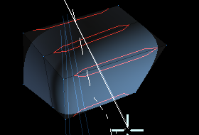
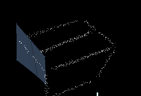

|
D E S T R O Y I N G G E O M E T R Y
To Delete edges or control polygons simply press the Left
mouse button in space and drag a line that crosses the edges
you want to delete. Make sure that the edge ends don't snap
to any existing vertexes. Delete only works on polygons facing
the camera and will not delete the surfaces turned away from
the view. When you are drawing an edge that deletes another
edge a red making appears on the edge. Make sure you see the
red marks when you want to delete and that you don't see them
when you want to draw an edge or do a selection.
|

Notice the red overlay drawn over the edges you cross the edges.
They indicate that if the left mouse button is released the edges
and the surfaces will be deleted. Therefore you must
look out for this symbol so that you don't delete geometry by
accident when drawing or selecting. |
When an edge or surface is deleted
it turns to dust, this is a good indicator that a delete has been
made and gives the user a chance to undo the action if it was
not intended.  |